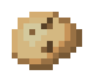

<ion-header [translucent]="true">
	<ion-toolbar>
		<ion-title class='ion-text-center'>
			{{ potato_names[last_potato_index] }}
		</ion-title>
	</ion-toolbar>
</ion-header>

<ion-content [fullscreen]="true" id='main'>
	<ion-grid>
		<ion-row id='potato_row' >
			<ion-col class='ion-align-self-center' offset=3>
				
			</ion-col>
		</ion-row>

		<ion-row>
			<ion-col >
			<div class="container">
				<p class='ion-text-center'>{{tap_counter}} batatas comidas</p>
				<p class="ion-text-center">Próximo upgrade: {{next_cap}}</p>
			</div>
			</ion-col>
		</ion-row>
	</ion-grid>

	<ion-fab vertical="bottom" horizontal='end'>
		<ion-fab-button [disabled]='tap_counter <= potato_upgrades[0].cap' (click)='updatePotatoSprite()'>?</ion-fab-button>
	</ion-fab>
</ion-content>
